Ollama 使用教學：在自己的電腦上運行大型語言模型
什麼是 Ollama?
Ollama 並非一個大型語言模型，而是協助你快速安裝、管理與運行各種 LLM 的開源工具。換句話說，它就像一個「語言模型管家」，幫你整合安裝流程、記憶體配置，以及提供 REST API 介面，讓其他程式可以把 Ollama 當成後端 AI 服務來使用。透過 Ollama，你可以更方便地在自己的電腦（或伺服器）上進行模型測試、開發，甚至直接部署應用。

Ollama 的使用情境非常廣泛，尤其適合想離線運作 AI 或在本地端保有數據隱私的使用者。例如，你可以用它來測試不同大小、不同架構的模型，包括小型的 7B 參數模型，或是超大型的 70B 參數模型，依照你的硬體資源調整執行策略。它也支援量化技術，讓模型在一般 RAM 配置中依舊能順暢跑起來。
Ollama 的核心特色
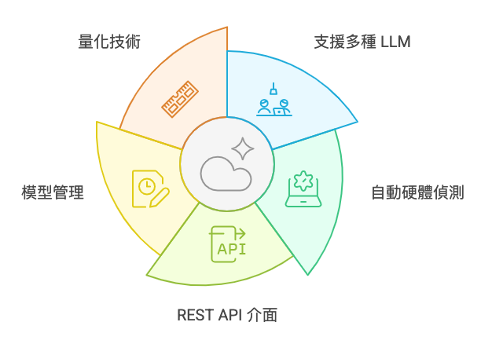
1. 支援多種大型語言模型
Ollama 本身並不限定你只能跑 llama 模型，而是彈性地整合多個 LLM。你可以用它來安裝像是 DeepSeek-R1、Llama、Gemma 等常見的模型，透過簡單的命令就能快速切換或更新。
2. 自動偵測硬體資源
無論你的設備是只有 CPU，還是配備了 NVIDIA RTX 30、40 系列等 GPU，Ollama 都能自動偵測並選擇最佳的推理模式。若偵測到 GPU，可大幅加速運行；如果只有 CPU，也能以較慢的速度執行小型或量化後的模型。
3. REST API 介面
Ollama 提供 REST API，讓你可以很容易地在其他程式語言（例如 Python、Node.js、Go 等）中呼叫 Ollama，將其當作後端的 AI 回答服務。你可以把 Ollama 視為一個可本機端部署的「AI 伺服器」。
4. 輕鬆管理模型下載與更新
Ollama 會把各種模型集中管理，包含檔案下載、版本更新等，減少你手動去 GitHub 或其他資源抓模型檔的麻煩。對於需要常常測試新模型或版本的人來說，這點相當方便。
5. 量化技術支援
為了減少記憶體需求，Ollama 支援量化後的模型。以 Llama 2 7B 為例，原本需要超過 14GB 記憶體，在 4-bit 量化後只需要大約 4GB，即使在沒有高階 GPU 的情況下，也能跑起基本推理工作。
安裝前置作業：系統需求
在正式安裝並執行 Ollama 之前，你需要先確認自己的硬體、作業系統或硬碟是否符合需求。以下整理幾項重點:
1. CPU
- 如果電腦沒有 GPU，Ollama 會使用 CPU 來跑模型推理。
- 純 CPU 的推理速度可能較慢，適合測試小型模型或量化後的模型。
2. GPU （可選）
- 若電腦/伺服器上有支援 CUDA 的 NVIDIA 顯示卡（如 GeForce RTX 30、40 系列等），Ollama 能自動偵測並啟用 GPU 加速，推理速度將大幅提升。
- 具體可支援的 GPU 列表可參考官方說明或 Ollama GitHub 頁面。
3. 記憶體（RAM）
- 記憶體需求主要取決於模型大小。像 Llama 2 7B 模型推理時，未量化大約需要 14GB，量化後可降至 4GB 左右。
- 如果你打算跑 70B 等級的大模型（例如 Llama 3.3 70B，下載包可達 40GB+），至少要準備 32GB 以上的 RAM 才比較保險。此外也要注意硬碟儲存空間的大小。
4. 作業系統
- Linux、macOS、Windows（需要在 WSL 或 Docker 環境）等都能運行 Ollama，但建議以 Linux 或 macOS 為主，環境配置相對完整。
- 如果在 Windows 上使用，最好先確認 Docker 或 WSL2 是否裝好。
5. 硬碟空間
- 除了安裝 Ollama 本身的空間外，更大宗的佔用是各種模型檔案。例如：
- DeepSeek-R1（7B）：下載大小約 4.7GB
- Llama 3.3（70B）：下載大小約 43GB
- Gemma 2（9B）：下載大小約 5.5GB
- 請評估你的硬碟空間，避免安裝大模型時系統爆滿。
6. Python 環境 （可選）
建議先在電腦上安裝 Python，以方便後續的應用測試（若只是單純進行 no-code 整合應用，則可省略安裝，並參考下一篇介紹的 Open WebUI）。對開發需求的初學者來說，Anaconda 會是相當方便的選擇，因為它能一次安裝好 Python 本身與多種常用的科學運算套件。
- 可以參考 Python 環境安裝指南 來進行環境設定。
- 對於有開發需求的人而言，除了 Ollama CLI 工具本身，也可能利用 Python 來呼叫 Ollama 提供的 API，進而做更進階的應用整合。
以上列出的硬體與系統需求，是為了確保 Ollama 能順利運行、並最大程度發揮效能。如果你的環境都符合這些要求，接下來就能正式進入安裝與測試的階段囉！
Info
以下教學操作的環境以 Linux Server 為主，Windows 或 MacOS 的操作方式基本上差不多！
Ollama 安裝
方法一 官方下載安裝包 (初學者建議)
首先，前往 Ollama 官方網站，在首頁找到「Download」按鈕，選擇適合自己作業系統的安裝方式。
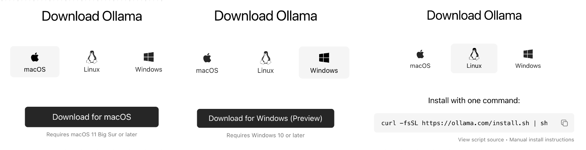
本文以 Linux 系統作為展示，在終端機輸入以下指令，一鍵下載並安裝 Ollama：
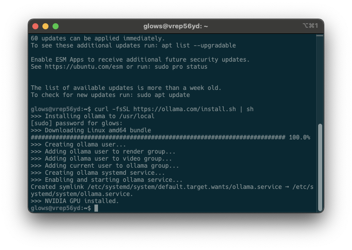
安裝完成後，Ollama 服務會自動在背景運行。你可以在終端機輸入 ollama -v，若顯示版本資訊或指令列表，即代表安裝成功。
同時要確認 Ollama server 是否成功被啟動，可以在終端機中輸入以下指令，透過 curl 測試:
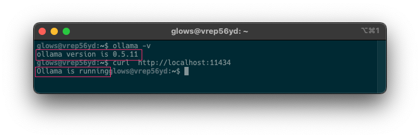
亦或是可以在瀏覽器輸入 http://localhost:11434 連線成功將會看到 Ollama is running 的字串訊息。
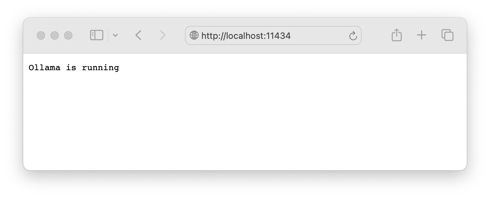
若沒有被正常啟動服務，可以手動輸入以下指令啟動 Ollama 服務:
如何讓 Ollama 可供外部存取
如果你有固定 IP，並希望讓其他電腦可以連線至此台機器，你需要執行以下指令，使 Ollama 監聽所有網路介面：
或者，你可以修改 Ollama 的 systemd 服務設定，讓它在 0.0.0.0:11434 監聽連線，以便外部設備能夠存取。
若想要終止 Ollama 背景運行，在 Linux 系統可以輸入以下指令停止該程序。
在 Linux 系統中設有開機自動運行腳本，因此手動終止程序後可以再透過以下指令啟動。
如果你在 Windows 上運行 Ollama，可以打開 工作管理員 (Task Manager)，找到 ollama.exe，然後手動結束程式。在 macOS 上，你可以在螢幕右上角的 工具列 找到 Ollama 圖示，點擊後選擇 Quit 來終止程式。
Info
- 稍後會詳細說明常用的Ollama指令，以及如何下載和測試LLM模型。
- 在完成方法一安裝並確認 Ollama 已成功在背景運行後，可以直接跳轉至使用 Ollama 下載和運行模型來開始使用模型。
方法二 使用 Docker 安裝 (專業玩家使用)
如果你偏好使用容器化的方式部署 Ollama，也可以透過 Docker 來啟動服務。以下以 Ubuntu 為例，示範啟動方式：
1. 先安裝 Docker
如果系統尚未安裝 Docker，請先安裝。以 Linux Server 系統為例，可先透過以下指令更新並安裝 Docker Engine:
啟動Docker 服務:
安裝完成後，確認 Docker 版本:
Note
如果你的作業系統有GUI介面推薦使用，Docker Desktop 軟體來管理 Docker 容器。
2. 啟動 Ollama 容器
使用 CPU 啟動服務
如果只使用 CPU 進行推論：
使用 GPU 啟動服務
如果需要使用 Nvidia GPU 進行加速推論，必須安裝 NVIDIA Container Toolkit ，讓系統能夠使用 GPU。若不確定自己的 GPU 是否支援，可以先到 Ollama GuiHub 官方的支援列表查看。首先確保本機已安裝 Nvidia GPU驅動程式:
若成功出現以下畫面，則表示系統已正確配置 GPU 驅動程式。若尚未安裝，您可以參考這篇文章進行設定： Linux 安裝 NVIDIA GPU 驅動完整教學。
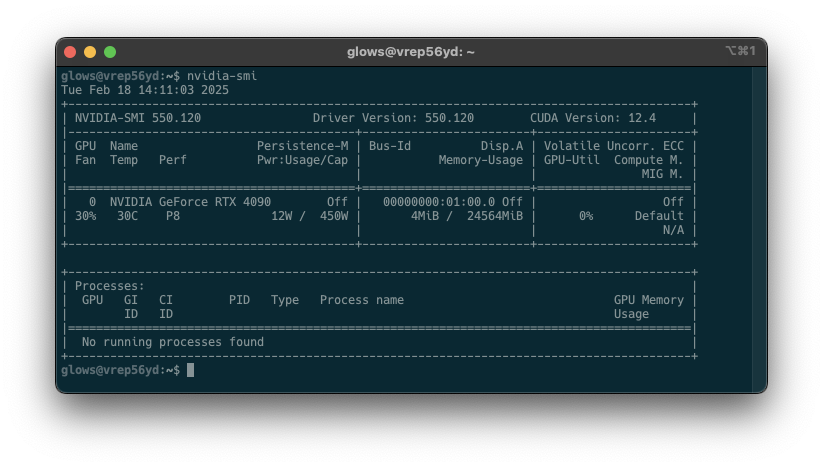
接著，在 Linux 安裝 NVIDIA Container Toolkit 使 Docker 容器能使用 GPU 運算環境。基本上按照官方安裝步驟就能完成。首先使用 Apt 安裝，這段指令的主要目的是 設定 NVIDIA Container Toolkit 的 APT 軟體庫 (repository)，以便可以使用 apt 來安裝與更新 NVIDIA Container Toolkit。
curl -fsSL https://nvidia.github.io/libnvidia-container/gpgkey \
| sudo gpg --dearmor -o /usr/share/keyrings/nvidia-container-toolkit-keyring.gpg
curl -s -L https://nvidia.github.io/libnvidia-container/stable/deb/nvidia-container-toolkit.list \
| sed 's#deb https://#deb [signed-by=/usr/share/keyrings/nvidia-container-toolkit-keyring.gpg] https://#g' \
| sudo tee /etc/apt/sources.list.d/nvidia-container-toolkit.list
sudo apt-get update
設定完成後，即可使用 Apt 安裝 NVIDIA Container Toolkit packages:
將 NVIDIA Container Toolkit 設定為 Docker 的執行時環境，並重新啟動 Docker 服務，使變更生效。
安裝完成後，就可以在 Docker 或其他容器環境中使用 NVIDIA GPU 加速了。最後就使用 docker 啟動含有 GPU 的 Ollama 服務吧!
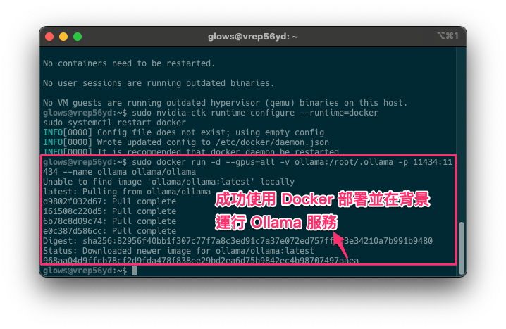
部署成功後，我們可以進入正在運行的 Ollama Docker 容器，並開啟一個互動式 Bash Shell，以便直接在容器內操作。
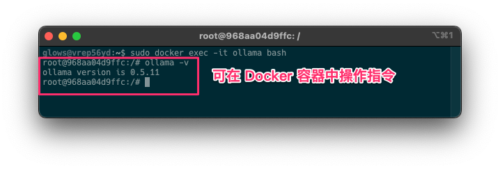
目前為止已經完成 Ollama 的環境安裝，並且啟動了 Ollama 服務。接下來要講解常用的指令，以及如何管理大型語言模型。
使用 Ollama 下載和運行模型
Ollama 安裝好之後，在終端機中，執行以下指令下載對應的大語言模型模型(例如: gemma2:9b)：
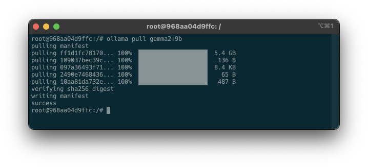
在 Ollama 官方的 Models 頁面上，提供了多種支援的模型。如果對這些模型較為熟悉，可以根據機器的配置選擇適合的模型，無論是較大的還是較小的版本。
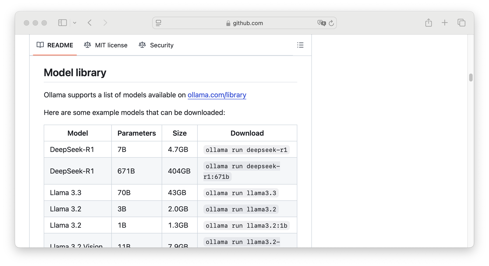
下載完成後，使用以下指令，透過終端機介面來使用剛剛下載的大型語言模型。
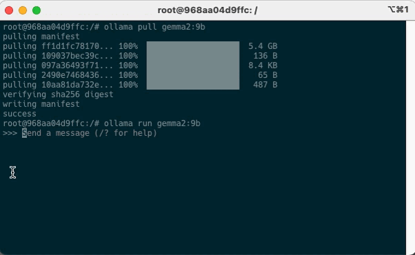
如果輸出如上圖所示內容，則表示大語言模型正常運作。輸入 /bye 或是 ctrl+d 退出問答介面。
REST API
除了直接在終端機使用互動模式，Ollama 預設也提供了一個 REST API，讓你可以透過程式或第三方工具（例如 Open WebUI）來呼叫並管理模型。換句話說，Ollama 不單只是一個聊天介面，而是能被視為一個「大型語言模型服務」：接收使用者送出的 prompt 後，進行推理並產生對應的答案。下面範例示範如何使用 curl 向本地端 Ollama 服務發送請求，指定要使用的模型（這裡是 gemma2:9b）並傳入對話內容：
Completion API(單次問答)
運行服務後，若要透過 API 來生成內容，可使用以下兩種方式。其中第一種方式會一次性返回解答，類似過去 OpenAI API Service 所提供的 Completion API。
curl http://localhost:11434/api/generate -d '{
"model": "gemma2:9b",
"system": "你是一位嚴謹的地理老師，請使用繁體中文回答問題。",
"prompt": "請問法國的首都？",
"stream": false
}'
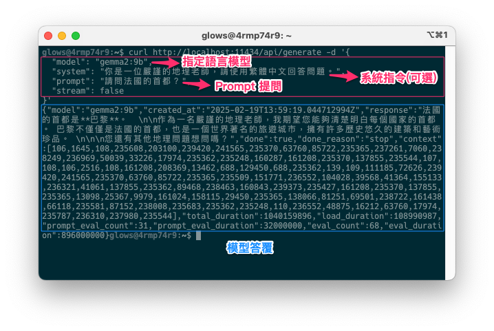
Chat Completion API（對話生成）
第二種方法是目前主流的對話生成模式，類似於 OpenAI API Service 所提供的 Chat Completion API。簡單來說，Chat Completion 的核心概念就是「補完對話」：我們先給 AI 一組對話內容作為上下文，再設定特定的條件或角色，接著讓 AI 根據這些情境繼續對話，產生後續回應。這樣一來，整段對話就能不斷延伸與發展。
curl http://localhost:11434/api/chat -d '{
"model": "gemma2:9b",
"messages": [
{ "role": "system", "content": "你是一位嚴謹的地理老師，請使用繁體中文回答問題。" },
{ "role": "user", "content": "請問美國的首都?" },
{ "role": "assistant", "content": "美國的首都是 **華盛頓哥倫比亞特區** 。" },
{ "role": "user", "content": "請問法國的首都?" }
],
"stream": false
}'
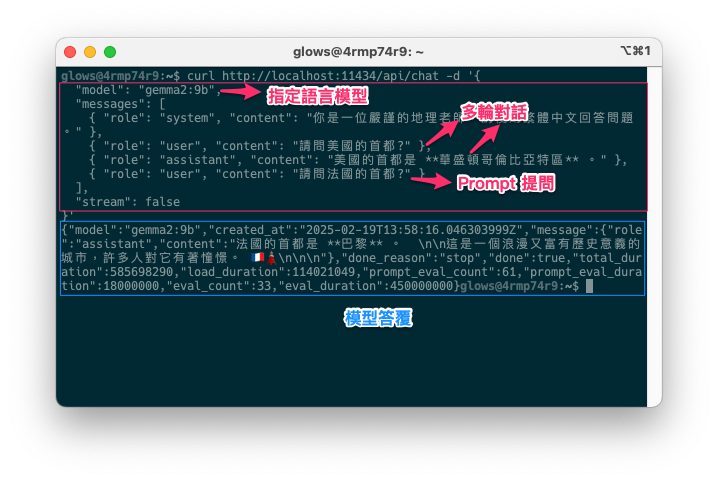
Info
- 更詳細的 API 參數說明與使用方式，請參考 Ollama 的官方文件。
- 或是參考下一篇教學文章： Ollama API整合OpenAI
Ollama 使用技巧
以下整理幾個 Ollama 常用的指令，方便你快速上手並管理大型語言模型。後續若有進階需求，可再深入查看官方文件或使用 ollama help 指令掌握更多參數與用法。
| 指令 | 用途 | 範例 | 補充說明 |
|---|---|---|---|
ollama version |
檢查目前安裝的 Ollama 版本 | ollama version |
確認指令是否正常運作，以及版本是否符合需求 |
ollama list |
列出本機已安裝或下載的所有模型 | ollama list |
快速查看目前可使用的模型清單 |
ollama pull [model_name] |
從遠端下載（或更新）指定模型 | ollama pull llama2 |
下載過程中若檔案體積較大，需確保網路穩定，下載完後即可使用 |
ollama run [model_name] |
執行指定的模型並進入互動式模式 | ollama run llama2 |
模型載入後，可直接在終端機進行對話或測試 |
ollama rm [model_name] |
移除指定的模型 | ollama rm llama2 |
刪除不再需要的模型，能節省空間；使用前請先確認是否確定要移除 |
ollama help |
顯示 Ollama CLI 的所有可用指令與參數 | ollama help |
如果忘記用法或想了解進階功能，可用此指令取得官方幫助資訊 |
其他常見參數（於 run 中使用） |
例如 --temperature、--top_p、--max_tokens 等參數 |
ollama run llama2 --temperature 0.7 |
調整模型生成文字的「創造性」程度、抽樣分佈或輸出長度等，細節可參考官方文件 |
若需要確認 Ollama 是否有使用到 CPU 或 GPU，也可使用 ollama ps 指令來查看詳細資訊。更多相關說明，請參考官方文件：Ollama FAQ。
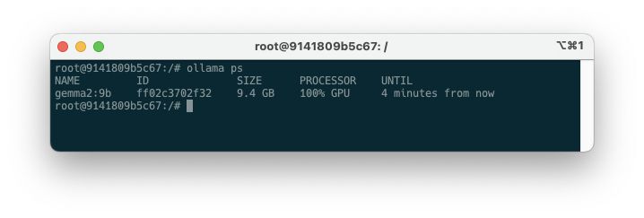
我們可以使用 ollama list 來查看本機上已下載的 LLM 模型。這些模型會存放在以下系統資料夾中：
- macOS: ~/.ollama/models
- Linux: /usr/share/ollama/.ollama/models
- Windows: C:\Users\%username%.ollama\models
Note
如果你是透過 Docker 運行 Ollama，模型的存放位置會依據 Docker Volume（磁碟掛載） 設定來決定。
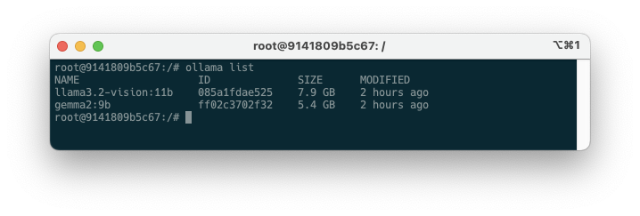
如何找到 Docker Volume 的實體位置?
- 指令中的 -v ollama:/root/.ollama 會讓模型存放在 Docker Volume 內，而不是主機的 /root/.ollama。
- 你可以使用
docker volume inspect ollama來查看實際存放位置。
列出 Docker Volumes
你會看到類似的輸出：
這表示你的 ollama Volume 已經建立。
查找 ollama Volume 的具體存放位置
其中 Mountpoint 顯示了實體存放位置。
總結
在這篇文章中，我們已經介紹了 Ollama 這個強大的大型語言模型（LLM）管理工具，不僅能輕鬆安裝、切換與執行各種模型，還提供了 REST API 介面，方便開發者結合不同程式或服務。如果你覺得純指令操作比較麻煩，或想用更友善的視覺介面跟 AI 模型互動，可以嘗試搭配「Open WebUI」來實現。Open WebUI 的操作介面與 ChatGPT 十分相似，除了能聊天，還能進行 AI 繪圖、圖像辨識、RAG 檢索增強生成，以及整理 PDF 檔案內容或搜尋網頁等進階功能。最棒的是，整套流程不用寫任何一行 Python 程式碼就能上手！
下一篇文章將會進一步示範如何讓 Ollama 與 Open WebUI 整合，讓你在本地端打造功能豐富、使用流暢的 AI 服務。想知道更多細節或尋找更便利的操作方式，就請持續關注下一篇囉！